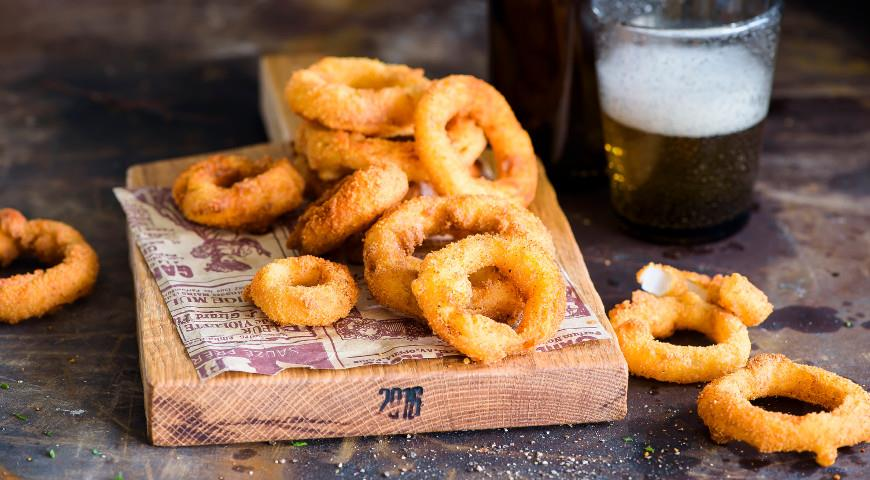

Луковые кольца
Хрустящие луковые кольца

Ингридиенты
- крупный репчатый лук – 2 шт.
- мука – 320 г
- разрыхлитель – 2 ч. л.
- яйца – 2 шт.
- молоко – 370 мл
- панировочные сухари – 250 г
- масло для фритюра – не менее 1 л
- соль, свежемолотый черный перец, копченая паприка – по вкусу
- Шаг 1
Для приготовления хрустящих колец репчатый лук очистите. Затем каждую луковицу нарежьте кружками толщиной 1 см и осторожно разберите на кольца, стараясь не повредить их целостность,
- Шаг 2
Муку тщательно перемешайте в миске с 1,5 ч. л. соли и разрыхлителем. Подготовленные луковые кольца порциями обваляйте в получившейся смеси, лишнее стряхните.
- Шаг 3
Взбейте яйца с молоком и добавьте мучную смесь, перемешайте до однородности. Окунайте кольца в яично-мучную смесь и выкладывайте на решетку, чтобы стекло лишнее.
- Шаг 4
В отдельной миске взбейте венчиком яйца с молоком. Постепенно добавьте оставшуюся мучную смесь и перемешайте до получения массы однородной консистенции.
- Шаг 5
Луковые кольца, обваленные в мучной смеси, опускайте порциями в яично-мучную, оставляйте на несколько секунд и выкладывайте на решетку, чтобы стекла лишняя жидкость.
- Шаг 6
Масло для фритюра нагрейте в кастрюле или сотейнике до 180°C. Кольца в кляре обваляйте в панировочных сухарях. Жарьте во фритюре до золотисто-коричневой корочки с обеих сторон (2–3 минуты).
- Шаг 7
Готовые хрустящие луковые кольца выкладывайте на бумажные полотенца, чтобы впитался лишний жир. Приправьте копченой паприкой, солью, свежемолотым перцем и сразу же подайте на стол.